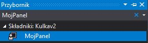

abstract class Figura
{
// obliczam ilosc odbic figur oraz ilosc instancji klasy
public static int iloscOdbic = 0, iloscFigur;
protected float polozenieX, polozenieY;
protected int promien, predkoscX, predkoscY;
protected SolidBrush b;
public Figura(float startX, float startY, int promien, int predkoscX, int predkoscY, Color color)
{
this.promien = promien;
this.predkoscX = predkoscX;
this.predkoscY = predkoscY;
polozenieX = startX;
polozenieY = startY;
b = new SolidBrush(color);
// przy utworzeniu nowego obiektu klasy inkrementuje wartosc o 1
iloscFigur++;
}
abstract public void rysuj(Graphics g);
public void porusz(int szerokosc, int wysokosc)
{
polozenieX += predkoscX;
polozenieY += predkoscY;
// sprawdzam czy element styka sie ze sciana, jesli tak to zmieniam jego kierunek i zwiekszam ilosc odbic o 1
if (polozenieX + promien >= szerokosc || polozenieX < 0)
{
iloscOdbic++;
predkoscX *= -1;
}
if (polozenieY + promien >= wysokosc || polozenieY < 0)
{
iloscOdbic++;
predkoscY *= -1;
}
}
}
Klasa Kulka
class Kulka : Figura
{
public Kulka(float startX, float startY, int promien, int predkoscX, int predkoscY, Color color)
: base(startX, startY, promien, predkoscX, predkoscY, color)
{
}
override
// metoda rysujaca kulke na panelu
public void rysuj(Graphics g)
{
g.FillEllipse(b, polozenieX, polozenieY, promien, promien);
}
}
Klasa Kwadrat
class Kwadrat : Figura
{
public Kwadrat(float startX, float startY, int promien, int predkoscX, int predkoscY, Color color)
: base(startX, startY, promien, predkoscX, predkoscY, color)
{
}
override
public void rysuj(Graphics g)
{
g.FillRectangle(b, polozenieX, polozenieY, promien, promien);
}
}
Form1
Inicjalizuję listę figur po czym dodaję dwa początkowe elementy typu kulka i kwadrat
private List figury = new List();
public Form1()
{
figury.Add(new Kulka(10, 10, 30, 5, 7, Color.Red));
figury.Add(new Kwadrat(100, 10, 50, 8, 5, Color.BlanchedAlmond));
InitializeComponent();
}
private void timer1_Tick(object sender, EventArgs e)
{
// w labelach ustawiam informacje o ilosci figur na planszy oraz ilosci odbic obiektow klasy figura
label2.Text = "Ilosc figur: " + Figura.iloscFigur;
label1.Text = "Ilosc odbic figur: " + Figura.iloscOdbic;
czyZaznaczony();
foreach (Figura f in figury)
{
f.porusz(mojPanel1.Width, mojPanel1.Height);
}
mojPanel1.Refresh();
}
// funkcja sprawdzajaca czy dany chceckbox jest zaznaczony, jesli tak to drugi jest wylaczony
private void czyZaznaczony()
{
if (checkBox1.Checked)
{
checkBox2.Enabled = false;
}
else
{
checkBox2.Enabled = true;
}
if (checkBox2.Checked)
{
checkBox1.Enabled = false;
}
else
{
checkBox1.Enabled = true;
}
}
private void panel1_Paint(object sender, PaintEventArgs e)
{
Graphics g = e.Graphics;
foreach (Figura f in figury)
{
f.rysuj(g);
}
}
// funkcje odpowiadajace za zachowanie timer'a
private void startBtn_Click(object sender, EventArgs e)
{
timer1.Start();
}
private void stopBtn_Click(object sender, EventArgs e)
{
timer1.Stop();
}
private void koniecBtn_Click(object sender, EventArgs e)
{
this.Close();
}
// tworze nowa figure po nacisnieciu dowolnego przycisku myszy w miejscu w ktorym klikam
private void mojPanel1_MouseClick(object sender, MouseEventArgs e)
{
// wartosc z numeric up down konwertuje do inta
int promien = Convert.ToInt32(numericUpDown1.Value);
int predkoscX = Convert.ToInt32(numericUpDown2.Value);
int predkoscY = Convert.ToInt32(numericUpDown3.Value);
// zaznaczona figure dodaje do listy
if (checkBox1.Checked)
{
figury.Add(new Kulka(e.X, e.Y, promien, predkoscX, predkoscY, textBox1.BackColor));
}
else
{
figury.Add(new Kwadrat(e.X, e.Y, promien, predkoscX, predkoscY, textBox1.BackColor));
}
}
// przycisk do wyboru koloru (uzylem elementu color dialog z toolboxa)
private void button1_Click(object sender, EventArgs e)
{
colorDialog1.ShowDialog();
textBox1.BackColor = colorDialog1.Color;
}
// funkcja pozwalajaca na zmiane interwalu timer'a przy uzyciu track bar'u (nieidealnie odwzorowuje slow motion)
private void trackBar1_Scroll(object sender, EventArgs e)
{
label7.Text = "Interwal: " + trackBar1.Value;
timer1.Interval = trackBar1.Value;
}
Na koniec MojPanel dziedziczący po Panelu
public class MojPanel : Panel
{
public MojPanel()
{
DoubleBuffered = true;
}
}
